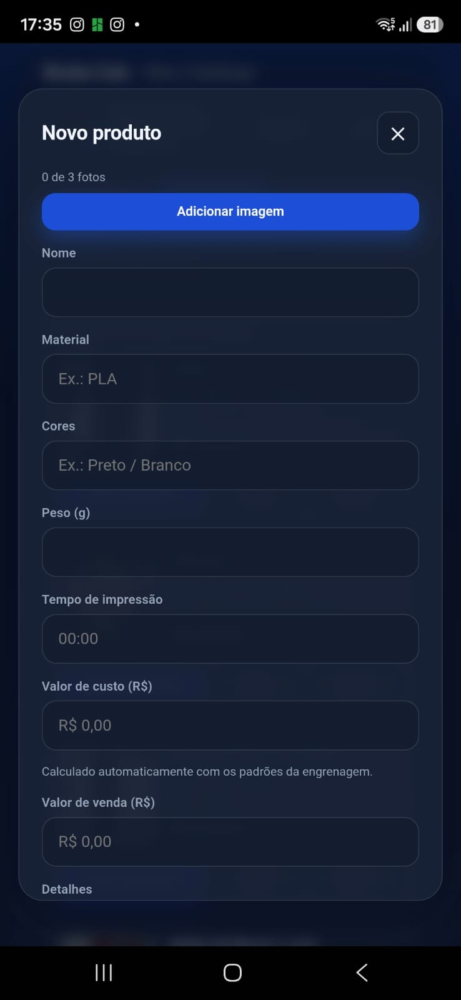
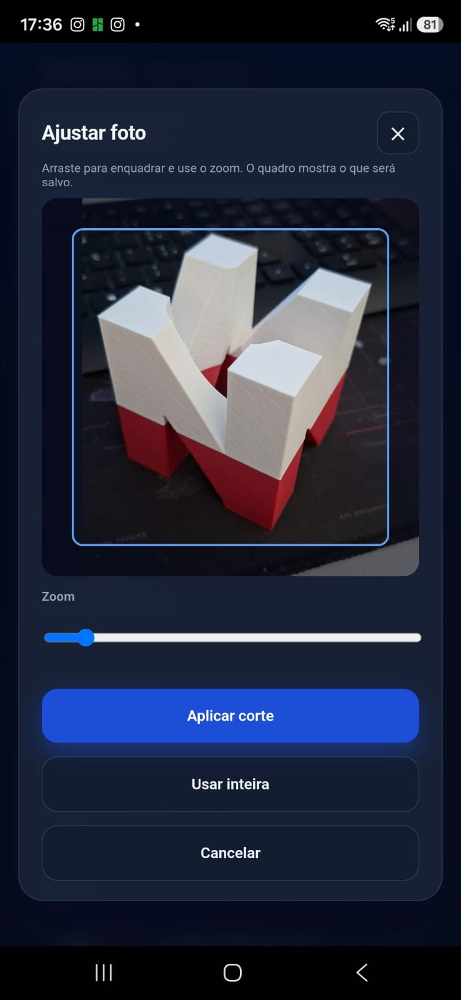
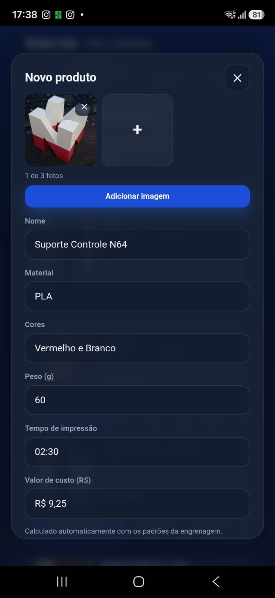
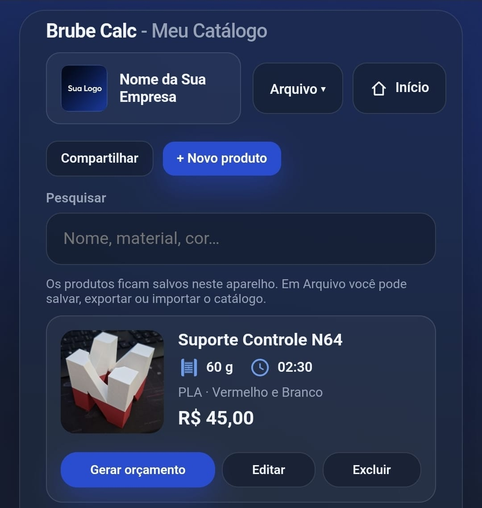
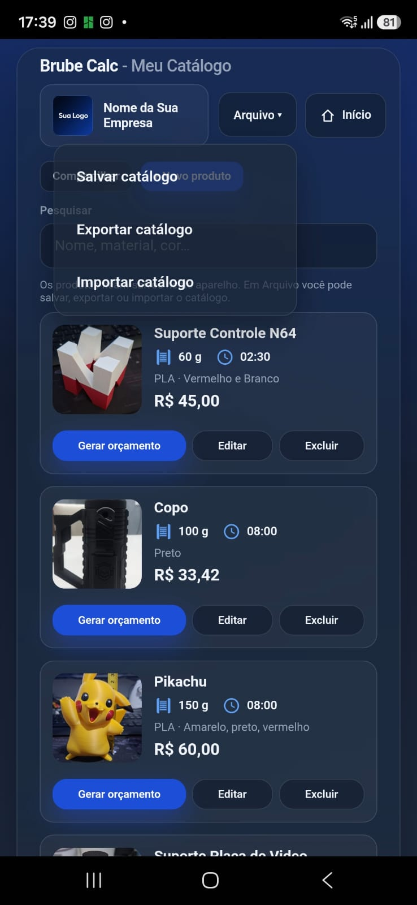
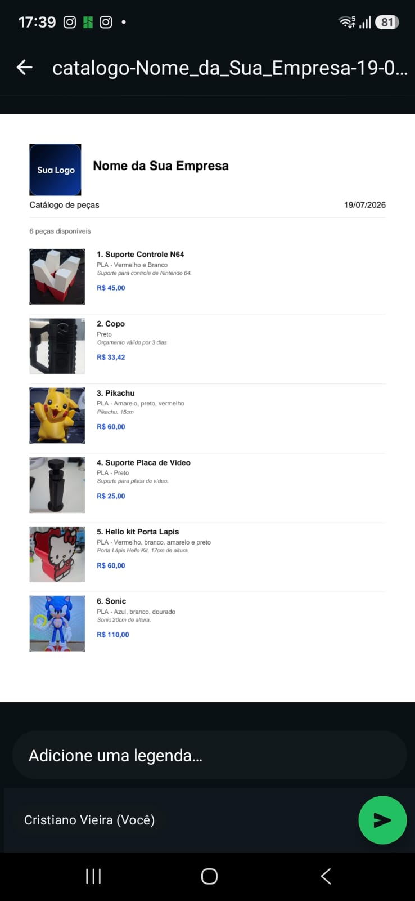
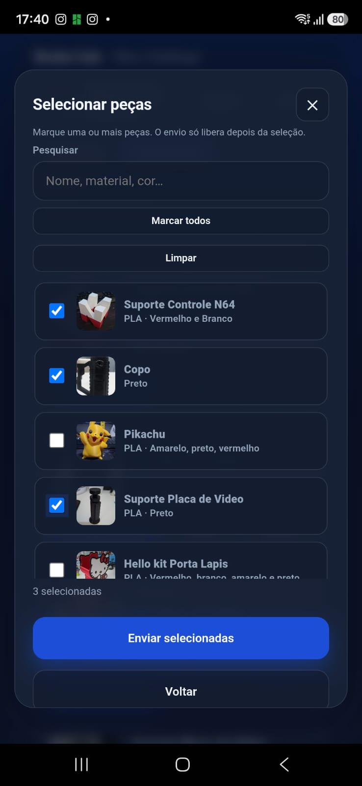
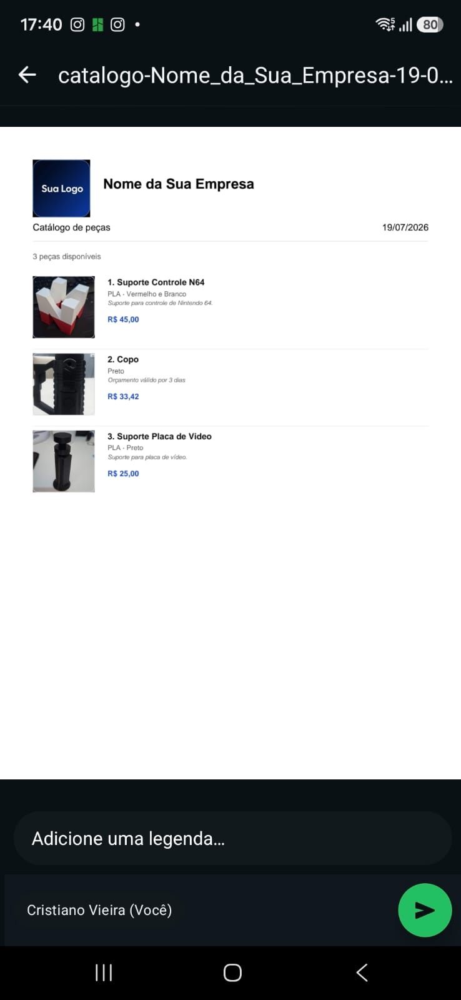
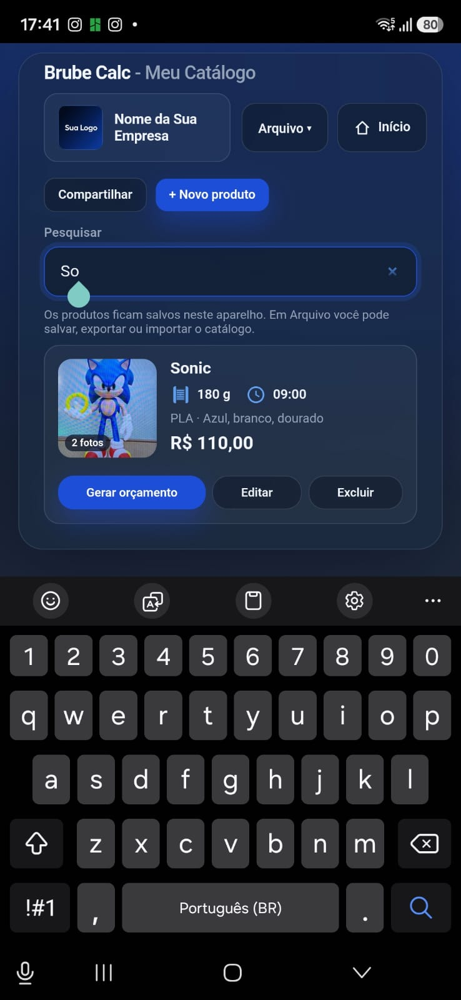
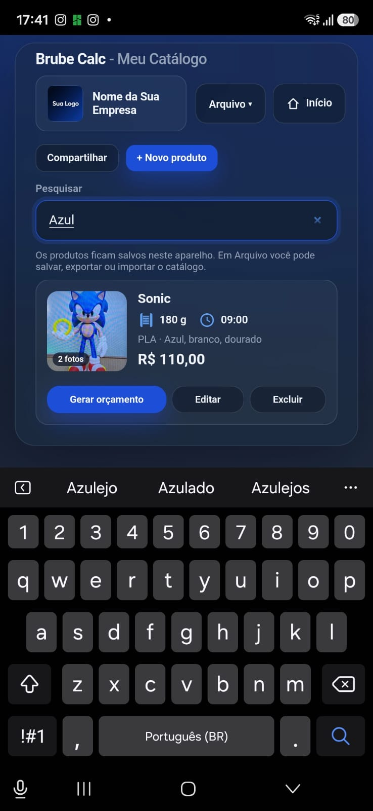

Brube Calc - Catálogo
Peças salvas no aparelho
Como usar o Catálogo
Cadastre peças com foto, pesquise, compartilhe o catálogo (total ou parcial) e gere orçamento a partir de um item.
1 Abrir o Catálogo
Na tela inicial, toque em Catálogo.

2 Novo produto
Toque em + Novo produto. Você pode adicionar até 3 fotos por peça. Toque em Adicionar imagem e escolha Galeria ou Câmera.

3 Ajustar a foto
Na tela Ajustar foto, arraste para enquadrar, use o zoom e toque em Aplicar corte. Se quiser a imagem sem cortar, use Usar inteira.

4 Preencher os dados
Informe nome, material, cores, peso (g) e tempo de impressão. O valor de custo pode ser calculado automaticamente com os padrões das Configurações (engrenagem).

5 Venda, detalhes e Salvar
Preencha o valor de venda e, se quiser, detalhes da peça. Toque em Salvar.
6 Peça na lista
O produto aparece no Meu Catálogo com foto, peso, tempo, material/cor e preço. Em cada card você pode Gerar orçamento, Editar ou Excluir.

7 Menu Arquivo
Em Arquivo você gerencia o arquivo do catálogo neste aparelho:
- Salvar catálogo — grava/atualiza o arquivo local;
- Exportar catálogo — gera um JSON para backup ou outro celular;
- Importar catálogo — traz um JSON salvo antes.

8 Compartilhar catálogo
Toque em Compartilhar. O envio leva só as peças (foto e dados) — sem totais de orçamento nem pagamento.
Escolha Catálogo total (todas as peças) ou Catálogo parcial (você seleciona quais enviar).
9 PDF do catálogo total
Com Catálogo total, o app gera um PDF com logo, empresa, lista de peças, fotos e preços — pronto para enviar (WhatsApp, Drive etc.).

10 Selecionar peças (parcial)
Em Catálogo parcial, marque as peças desejadas (ou use Marcar todos / Limpar). O botão Enviar selecionadas só libera com pelo menos uma marcada.

11 PDF do catálogo parcial
Só as peças escolhidas entram no PDF — útil para enviar só o que o cliente pediu.

12 Pesquisar
Use o campo Pesquisar para achar por nome, material ou cor. A lista filtra na hora.

